Kuramoto Decision Diffusion Models
Paper under review
Diffusion-based decision making has seen explosive popularity due to the ability in producing rich, multi-modal trajectories. However, existing frameworks erase the structure of robotic data, which is critical for action fluidity and non-myopic planning, through stochastic noising, then denoise or recover it only probabilistically. This paper aims to address the problem of incorporating spatio-temporal dependencies into the diffusion processes (i.e., forward and reverse), without sacrificing trajectory quality. Building upon and improving the work of Song et al. [1], we propose KDDM, a physics-inspired diffusion paradigm that explicitly encodes the information through Kuramoto-based synchronization. By two neat tricks to harmonize the intertwined chains of Langevin and Kuramoto dynamics, we prove that KDDM elegantly converges to the desired outcome, and theoretically outperforms prior approaches. Furthermore, we extend KDDM to ODE-accelerated and guided sampling, enabling its integration with today's decision-making ecosystem. Experimentally, our proposals achieve superior performance in general, across an extensive range of tasks, including trajectory augmentation, long-horizon planning, and (real-world) robotic control, compared to various diffusion-based solutions.
What is a Kuramoto Model?
The model has its roots in Winfree's 1967 study of coupled biological oscillators [2], which showed numerically that a population with heterogeneous periods synchronises abruptly past a threshold coupling — a phase transition in the statistical-mechanics sense, but intractable to analyse in full. Kuramoto answered this in 1975 [3] by replacing Winfree's general coupling with the simplest odd \(2\pi\)-periodic interaction, \(\sin(\theta_j - \theta_i)\), which made the model analytically tractable while preserving the qualitative physics.
Consider \(N\) phase oscillators \(\theta_i \in [-\pi, \pi)\), indexed \(i = 1, \ldots, N\), each with a natural frequency \(\omega_i\) drawn independently from a unimodal, symmetric probability density \(g(\omega)\) centred at zero (we always work in the rotating frame of the mean frequency). The Kuramoto model is the system of ODEs
The parameter \(K \geq 0\) is the global coupling strength, and the factor \(1/N\) normalises the interaction so that the dynamics remain well-defined as \(N \to \infty\); the coupling is all-to-all, so every oscillator influences every other equally. The \(\sin\) term is the unique odd \(2\pi\)-periodic function that vanishes when two oscillators are in phase, is maximally attracting at a quarter-period offset, and repels when they are exactly anti-phase. Any smooth odd coupling can be Fourier-expanded, and the \(\sin\) term dominates near the transition.
Explore the Kuramoto dynamics interactively below — adjust the coupling strength \(K\), number of oscillators \(N\), and frequency spread \(\sigma\) to see how synchronization emerges:
What should diffusion-based decision making guarantee?
Diffusion models now underpin robotic decision making as planners, policies, and data synthesizers. All three generate the same object — a chunked trajectory \(\tau = ([s_0, a_0], \ldots, [s_H, a_H])\) conditioned on \(c\) (images, goals, or task descriptors) — and all three raise the same question: what structural guarantees should a diffusion-based decision process provide?
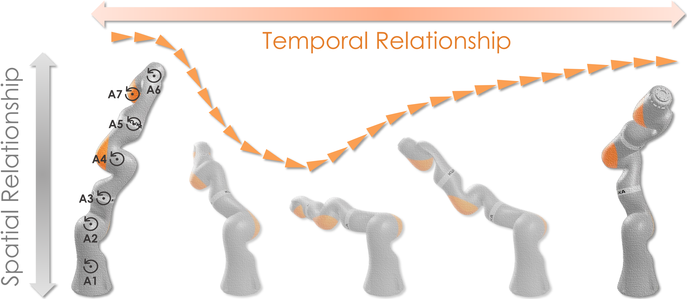
The difficulty is that classical diffusion is point-wise : DDPM, DDIM, EDM, DPM-Solver, and Rectified Flow all noise and denoise each state/action independently. But a 7-DoF arm demands both its spatial relationship (how the joints collaborate) and its temporal relationship (how the motion unfolds over time). Independent noise destroys that structure and leaves global consistency entirely to the network.
We argue that an effective framework should satisfy three desiderata: (1) temporal coherence — decisions across time steps should be mutually consistent, not independently generated; (2) efficient coordination — the generation process should leverage cross-joint information without quadratic scaling; and (3) theoretical grounding — the dynamics should admit tractable analysis connecting to well-understood physical models.
KODM moves in exactly this direction: by synchronizing and desynchronizing all points jointly, it lets local patterns reinforce one another before noise erodes them. Off-the-shelf, however, it is unsuited to decision-making — its forward process costs \(\mathcal{O}(T)\) per pass with no acceleration, and its sub-optimal score-matching objective yields unreal or failed trajectories. The dilemma is thus to keep its dependency-capturing power without surrendering the tractability of conventional diffusion, since any interaction between points prevents convergence to a stationary distribution.

But our answer is yes: recasting the denoising process through Kuramoto oscillators, KDDM satisfies all three desiderata without trade-offs, which we will get to later.
Kuramoto Decision Diffusion Model
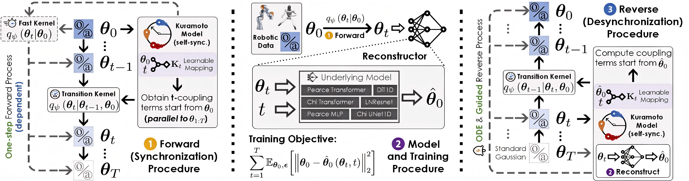
1. Two tweaks to the Kuramoto dynamics
The first tweak is self-synchronization, which makes the drift a function of the clean trajectory alone. Rather than treating the coupling among the oscillators in \(\theta_t\) as an attractor, KDDM couples only the noiseless trajectory: by the mean-field reduction, the coupling at time \(t\) is
\[ K_\psi(\theta_0, t) := r(t)\sin\!\big(\psi(t) - \theta_0(t)\big), \qquad \theta_0(t) = \theta_0(t-1) + K_\psi(\theta_0, t-1), \]and the reference-phase term \(\psi_{\mathrm{ref}}\) is dropped. Once \(\theta_0\) is specified, \(K_\psi(\theta_0,t)\) is uniquely determined for every \(t\): it is predictable, and therefore learnable.
Interactions nevertheless accumulate through \(\sum_{i=1}^{t}K_\psi(\theta_0,i)\), which keeps the two chains overlapped. The second tweak, the telescoping update, defines a variance-preserving transition kernel that clears the accumulated coupling as each new one arrives:
\[ q_\psi(\theta_t \mid \theta_{t-1}, \theta_0) = \mathcal{N}\!\Big(\sqrt{\alpha_t}\,\theta_{t-1} + \kappa_t K_\psi(\theta_0,t) - \sqrt{\alpha_t}\,\kappa_{t-1}K_\psi(\theta_0,t-1),\ \beta_t I\Big). \]The picture is a broken zipper pulled from top to bottom: the two sides stay apart above and below the slider and are joined only at its position. Each step thus adds a transient drift that is explicitly biased by the spatio-temporal dependency, without disturbing the structure we need. Unrolling the kernel telescopes the accumulated coupling away and merges the noise, leaving a closed-form marginal
\[ q_\psi(\theta_t \mid \theta_0) = \mathcal{N}\!\Big(\sqrt{\bar\alpha_t}\,\theta_0 + \kappa_t K_\psi(\theta_0,t),\ (1-\bar\alpha_t)I\Big), \]Because \(K_\psi(\theta_0,T) \to 0\) for large \(T\), the stationary law simplifies to the isotropic Gaussian \(\mathcal{N}(0,I)\). Bayes' rule then gives a Gaussian reverse — desynchronization — kernel as well:
\[ q_\psi(\theta_{t-1} \mid \theta_t, \theta_0) = \mathcal{N}\!\big(\tilde\mu(\theta_t, \theta_0),\ \tilde\Sigma_t I\big), \qquad \tilde\Sigma_t = \frac{(1-\bar\alpha_{t-1})\beta_t}{1-\bar\alpha_t}, \] \[ \tilde\mu(\theta_t,\theta_0) = \frac{\sqrt{\alpha_t}(1-\bar\alpha_{t-1})}{1-\bar\alpha_t} \big(\theta_t - \kappa_t K_\psi(\theta_0,t)\big) + \kappa_{t-1}K_\psi(\theta_0,t-1) + \frac{\sqrt{\bar\alpha_{t-1}}\beta_t}{1-\bar\alpha_t}\theta_0. \]2. Training and sampling
KDDM is parameterized by a trainable reconstructor \(\hat\theta_0\) that recovers the clean chunk from \(\theta_t\) at every step; any common backbone can be used, such as a 1D temporal CNN or a Time-Series Diffusion Transformer. Maximizing the usual evidence lower bound reduces to a weighted reconstruction bound,
\[ -\mathrm{ELBO} \le C + \sum_{t=1}^{T}\mathbb{E}_{\theta_0,\epsilon} \Big[\,k_t\big\|\theta_0 - \hat\theta_0\big(\sqrt{\bar\alpha_t}\theta_0 + \kappa_tK_\psi(\theta_0,t) + \sqrt{1-\bar\alpha_t}\,\epsilon,\ t\big)\big\|_2^2\,\Big], \]and in practice to the unweighted objective \(\mathcal{L}_{\mathrm{simple}} = \sum_{t=1}^{T}\mathbb{E}_{(\theta_0,\theta_t)} \|\theta_0 - \hat\theta_0(\theta_t, t)\|_2^2\) — an ordinary denoising regression. Sampling alternates the mean update above with Gaussian noise of variance \(\sigma_t\).
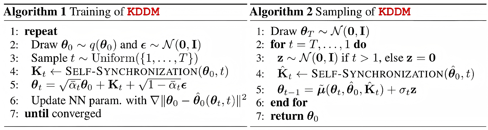
3. Some optimizations
3.1 DDIM-style ODE
Because the marginals are closed-form, the ancestral step can be replaced by a non-Markovian one, yielding KDIM — an implicit ODE sampler with the same marginals and training objective:
\[ \theta_{t-\Delta t} = \sqrt{\bar\alpha_{t-\Delta t}}\,\hat\theta_0 + \hat K_{t-\Delta t} + \sqrt{1-\bar\alpha_{t-\Delta t}-\sigma_t^2}\cdot \frac{\theta_t - \sqrt{\bar\alpha_t}\,\hat\theta_0 - \hat K_t}{\sqrt{1-\bar\alpha_t}} + \sigma_t\epsilon_t, \]where \(\Delta t\) is the number of skipped steps and \(\hat K_t\) abbreviates \(\kappa_t K_\psi(\hat\theta_0,t)\). At \(\sigma_t = 0\) the sampler is deterministic, mapping noise back to data in a single sweep.
3.2 Guided sampling
The reverse process also accepts conditioning. A pretrained time-conditional classifier steers it, or unifying the conditional and unconditional models gives classifier-free guidance. Training-free alternatives avoid a classifier altogether: replacement re-noises the known oscillators for inpainting, posterior sampling guides through a cheap metric on the Tweedie posterior mean, and sequential Monte Carlo re-weights and resamples particles, needing no task-specific guidance strength and converging to the true posterior as the particle count grows.
3.3 Learned coupling
The coupling terms \(\{K_\psi(\theta_0,t)\}_{t=1}^{T}\) need not be unrolled: a time-conditional network predicts them from \((\theta_0,t)\), cutting each self-synchronization from \(\mathcal{O}(t)\) to \(\mathcal{O}(1)\) after a supervised pre-training — which lets the forward pass form \(\theta_t\) in a single step.
KDDM enables improvement of diffusion-based synthesizer/planner/policy
1. Generate trajectories as data synthesizer
We evaluate KDDM as a trajectory synthesizer on standard transition datasets (Hopper, Walker, HalfCheetah, Ant, and Adroit Hand), comparing against KODM and other diffusion paradigms.
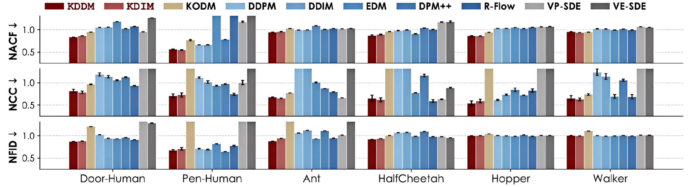
Generated data quality (smoothness & realness) comparison across datasets and DMs.
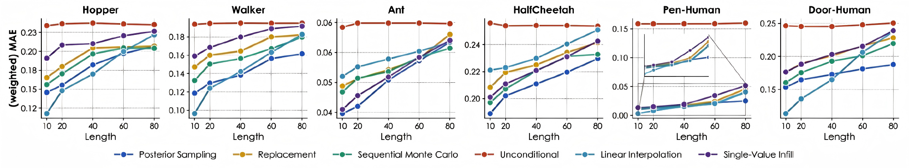
Comparison of the weighted errors for conditional generation task (generative trajectory stitching).
The takeaway: KDDM produces smoother and more realistic trajectories over other DMs, which improves NACF and NCC by up to 15.6% and 12.7%, respectively, compared with the best-performing baseline. Moreover, our proposed guided sampling schemes for KDDM is also effective.
2. Generate decision sequences as planner.
We extend KDDM to long and short horizon planning tasks requiring coordinated multi-step reasoning, including robot locomotion (Gym-MuJoCo), maze navigation (Maze) and robot manipulation (Franka Kitchen).
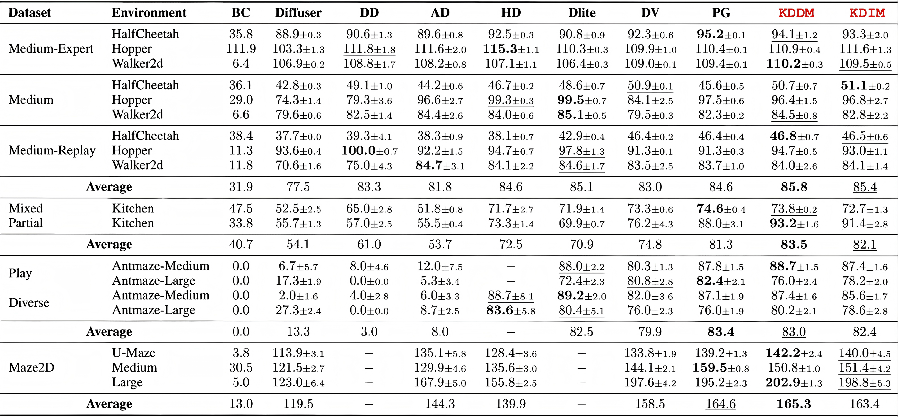
Offline planning performance comparison across D4RL [4] environments and diffusion-based RL algorithms.
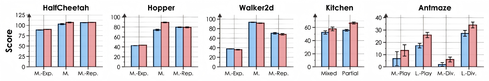
Comparing diffusion-based planning with KDDM (red) against the original (blue) diffuser [5].
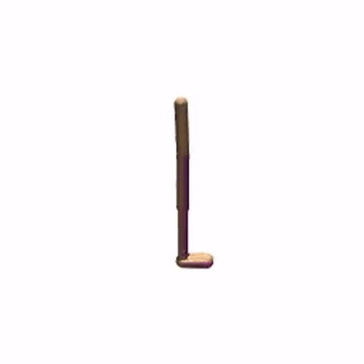
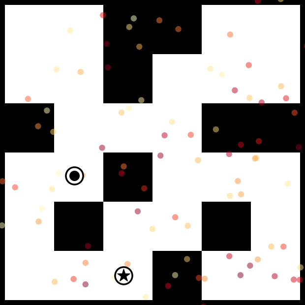
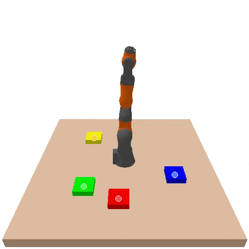
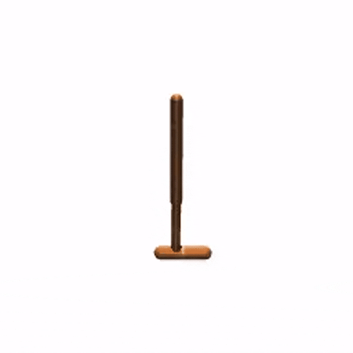
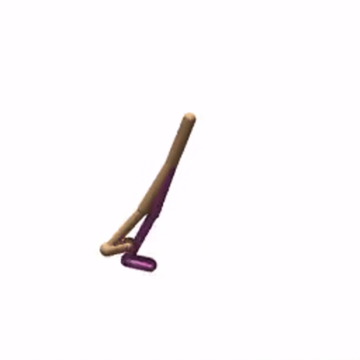
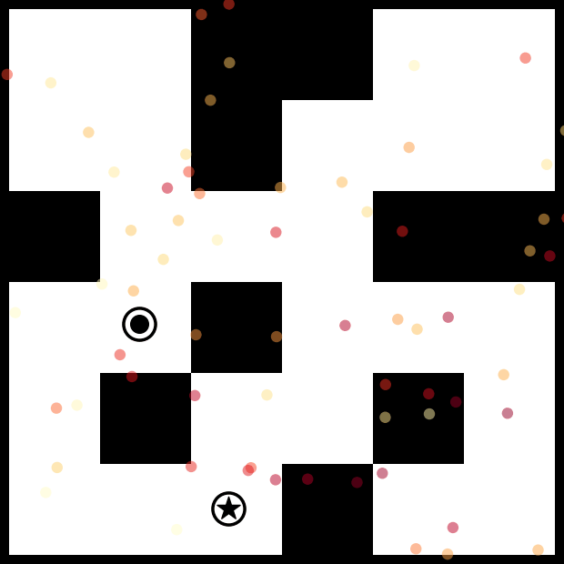
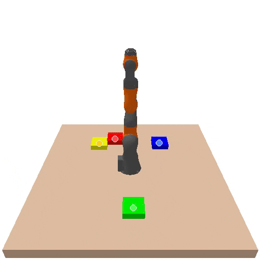
The takeaway: Introducing the Kuramoto model does make a better diffusion-based planner in offline RL. across all tasks (22 in total), our KDDM and KDIM lead all planners with 13 and 9 near-optimal results respectively.
3. Generate actions as multimodal policy.
We evaluate KDDM as a policy parameterization for model-based and model-free reinforcement learning, comparing against diffusion policy baselines.
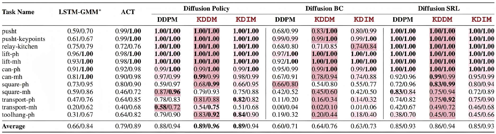
Success rate for state-based tasks with different diffusion-based control policies.
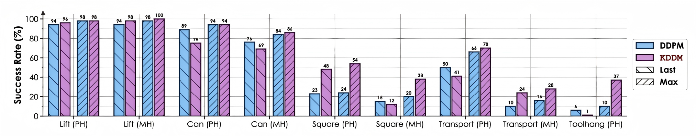
Success rate for image-based tasks with the Diffusion Behavior Cloning.
The takeaway: KDDM is able to learn effective (multi-modal) robotic control from human demonstrations. We see that the improvements brought by our proposed DM is pervasive (approximately 90% of the best-performing results). Further, our approach remains effective in visual scenarios, as it requires no modifications to the underlying architecture while retaining its advantages in general.
4. Real-world robot deployment
We deploy KDDM-backboned policies on a physical robot manipulation platform to validate its real-world applicability.
Setup: Our robot manipulation experiments use the open-source SO-10xARM platform developed by RobotStudio in collaboration with Hugging Face. The SO-101 (SO-10X) features six joints and three cameras, and is fully compatible with the open-source LeRobot [7] framework.
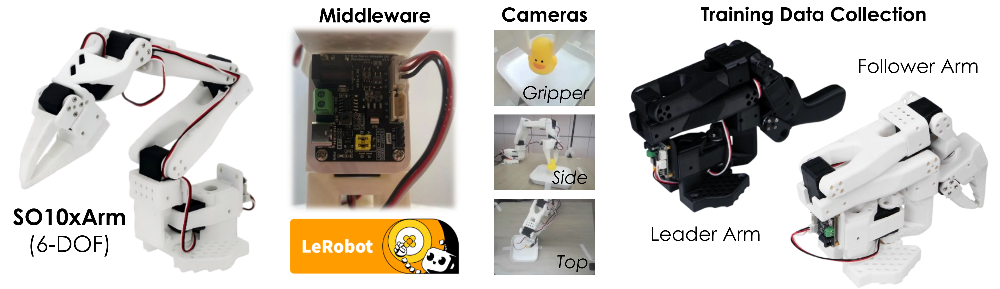
The takeaway: KDDM can enable real-world robot deployment on diffusion policies. It makes diffusion policies noticeably reasonable and more consistent on real-world manipulation tasks — with no extra smoothing or task-specific tuning.
References
- [1] Y. Song, A. Keller, S. Brodjian, T. Miyato, Y. Yue, P. Perona, and M. Welling, "Kuramoto orientation diffusion models," in Advances in Neural Information Processing Systems, 2026, pp. 4047–4076.
- [2] A. T. Winfree, "Biological rhythms and the behavior of populations of coupled oscillators," Journal of Theoretical Biology, vol. 16, no. 1, pp. 15–42, 1967.
- [3] Y. Kuramoto, "Self-entrainment of a population of coupled non-linear oscillators," in International Symposium on Mathematical Problems in Theoretical Physics, ser. Lecture Notes in Physics, vol. 39, Berlin: Springer, 1975, pp. 420–422.
- [4] J. Fu, A. Kumar, O. Nachum, G. Tucker, and S. Levine, "D4rl: Datasets for deep data-driven reinforcement learning," arXiv preprint arXiv:2004.07219, 2020.
- [5] M. Janner, Y. Du, J. B. Tenenbaum, and S. Levine, "Planning with diffusion for flexible behavior synthesis," in International Conference on Machine Learning, pp. 9902–9915, PMLR, 2022.
- [6] C. Chi, S. Feng, Y. Du, Z. Xu, E. Cousineau, B. Burchfiel, and S. Song, "Diffusion policy: Visuomotor policy learning via action diffusion," The International Journal of Robotics Research, 44(10-11):1684–1704, 2025.
- [7] R. Cadene, S. Alibert, F. Capuano, M. Aractingi, A. Zouitine, et al., "Lerobot: An open-source library for end-to-end robot learning," in International Conference on Learning Representations, vol. 2026, pp. 122398–122417, 2026.